Rozjazdy TabPFN vs model widmowy
Zbiór: test.csv, 600 cylindrów.
Klasa zgadza się w 99.33% (596/600).
Klasa + nasilenie: 98.17% (589/600).
Do ręcznego labelowania: 4 rozjazdów klasy + 7 rozjazdów nasilenia.
CSV: do_recznego_labelowania.csv — kolumny human_label, human_severity, notes.
1. test_0007 cylinder 14
rozjazd klasy
TabPFN: zakoksowany / małe
→
widmo: unknown
GLRT: istotność 168.5σ · χ=3.29 · amplituda 0.0 mV · szablon unknown
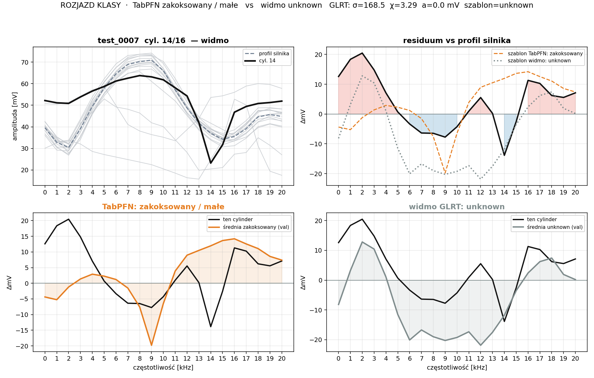
2. test_0033 cylinder 14
rozjazd klasy
TabPFN: unknown
→
widmo: ok
GLRT: istotność 5.2σ · χ=1.01 · amplituda 0.0 mV · szablon unknown
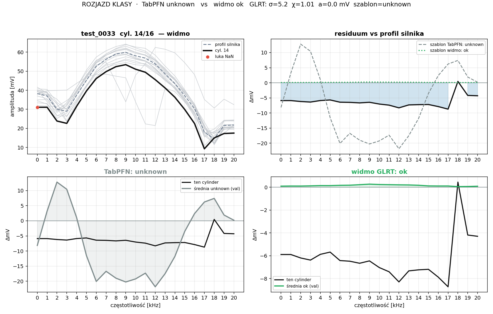
3. test_0034 cylinder 4
rozjazd klasy
TabPFN: iglica / średnie
→
widmo: unknown
GLRT: istotność 103.7σ · χ=2.43 · amplituda 0.0 mV · szablon unknown
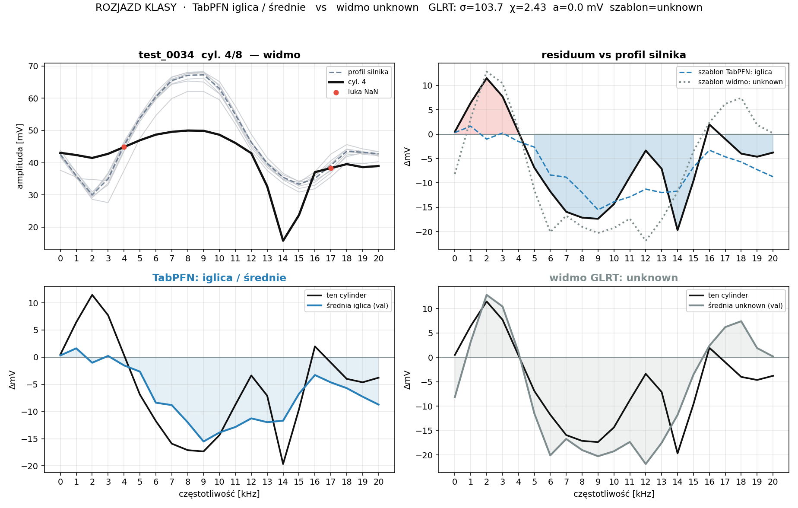
4. test_0040 cylinder 6
rozjazd klasy
TabPFN: lejacy / małe
→
widmo: unknown
GLRT: istotność 80.4σ · χ=1.61 · amplituda 0.0 mV · szablon unknown
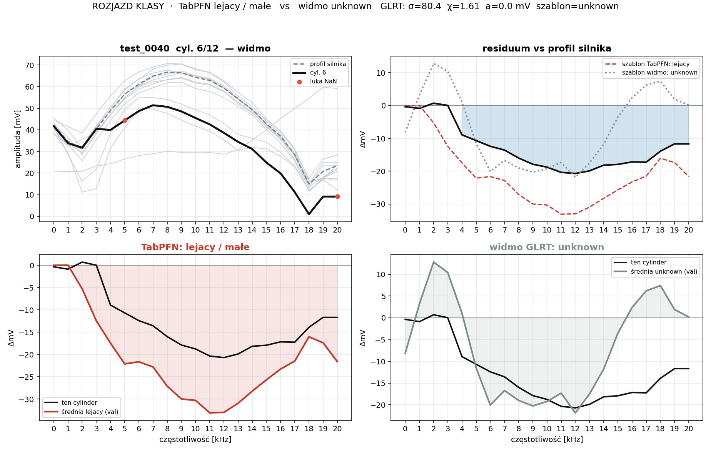
5. test_0004 cylinder 5
rozjazd nasilenia
TabPFN: zakoksowany / średnie
→
widmo: zakoksowany / małe
GLRT: istotność 89.9σ · χ=0.77 · amplituda 31.8 mV · szablon zakoksowany
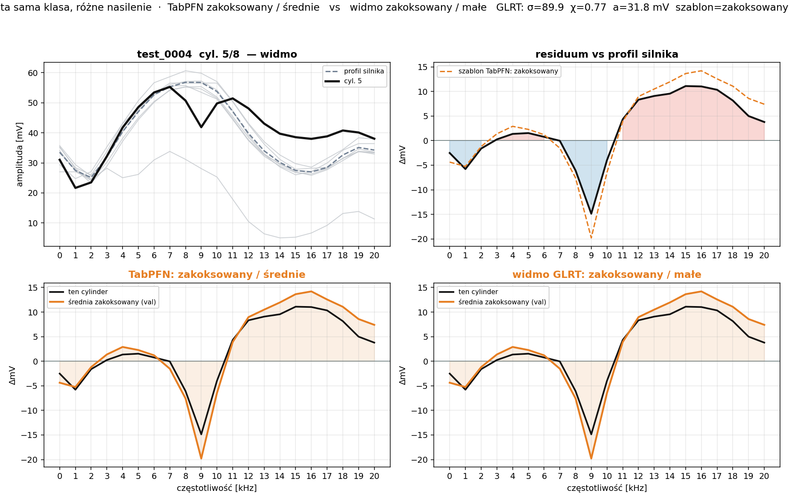
6. test_0012 cylinder 8
rozjazd nasilenia
TabPFN: zakoksowany / średnie
→
widmo: zakoksowany / małe
GLRT: istotność 68.6σ · χ=1.08 · amplituda 26.5 mV · szablon zakoksowany
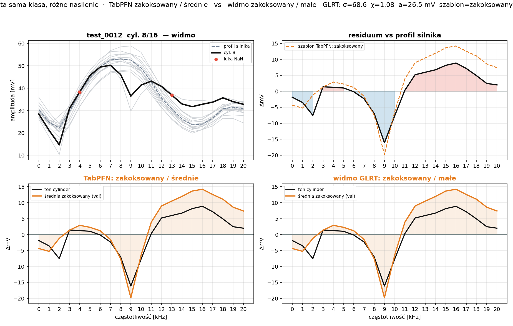
7. test_0012 cylinder 12
rozjazd nasilenia
TabPFN: zakoksowany / średnie
→
widmo: zakoksowany / małe
GLRT: istotność 124.8σ · χ=1.38 · amplituda 33.9 mV · szablon zakoksowany
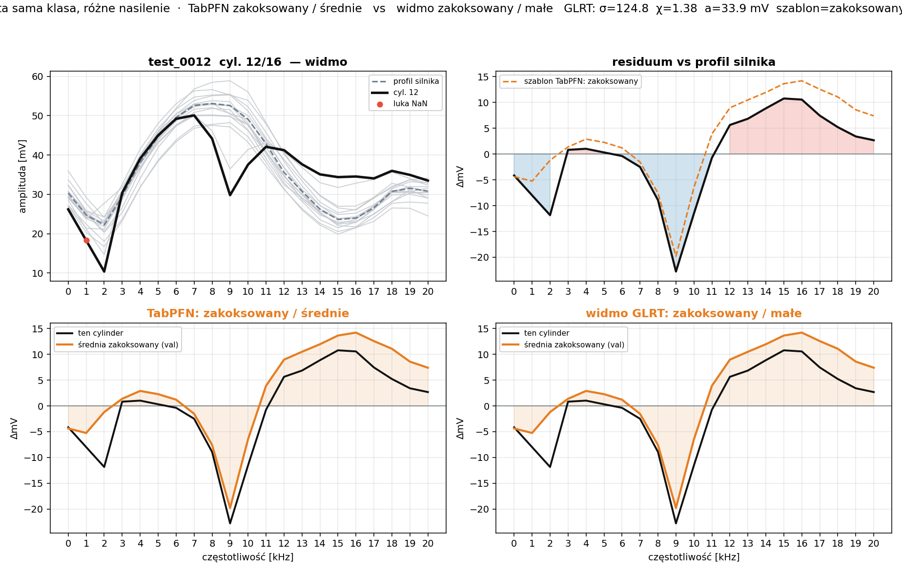
8. test_0022 cylinder 7
rozjazd nasilenia
TabPFN: pompa / średnie
→
widmo: pompa / małe
GLRT: istotność 59.1σ · χ=0.59 · amplituda 27.1 mV · szablon pompa
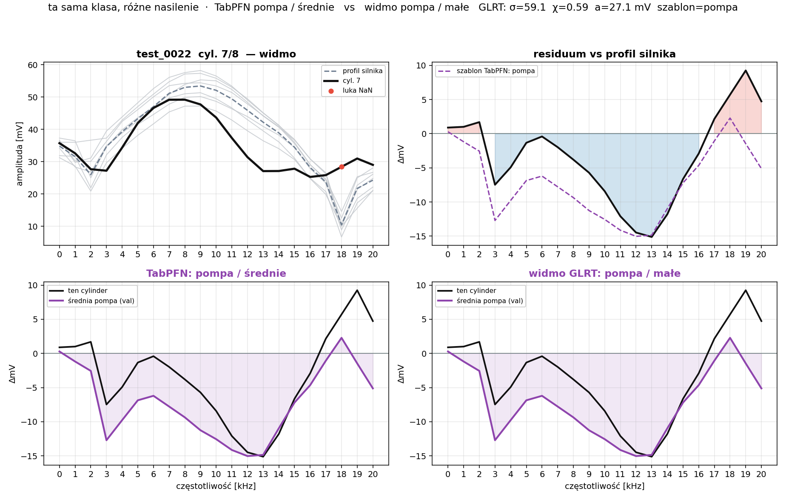
9. test_0033 cylinder 4
rozjazd nasilenia
TabPFN: zakoksowany / średnie
→
widmo: zakoksowany / duże
GLRT: istotność 265.6σ · χ=1.66 · amplituda 53.7 mV · szablon zakoksowany
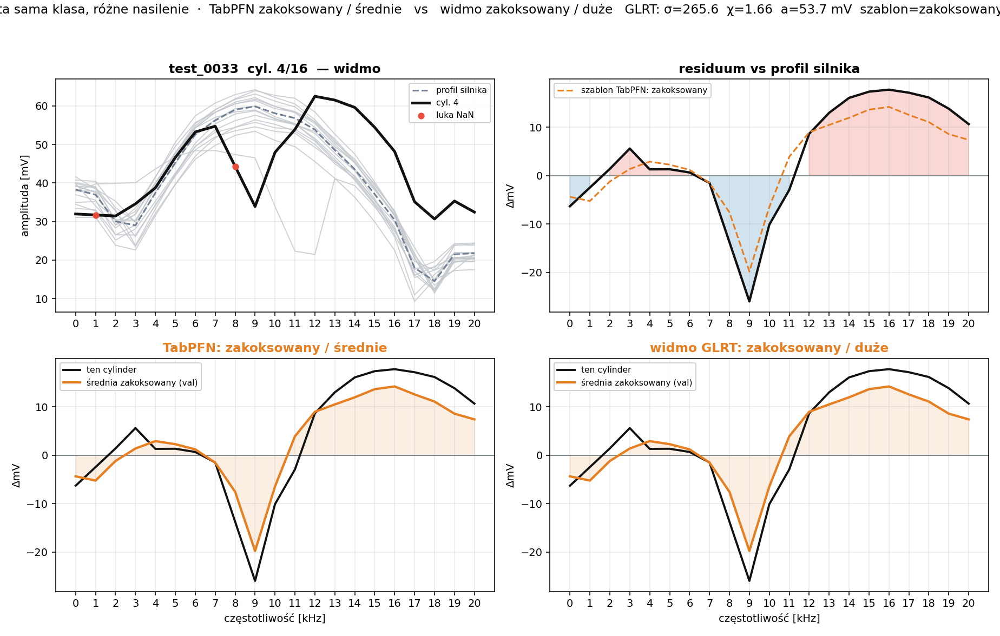
10. test_0043 cylinder 10
rozjazd nasilenia
TabPFN: zakoksowany / średnie
→
widmo: zakoksowany / małe
GLRT: istotność 105.5σ · χ=0.90 · amplituda 33.4 mV · szablon zakoksowany
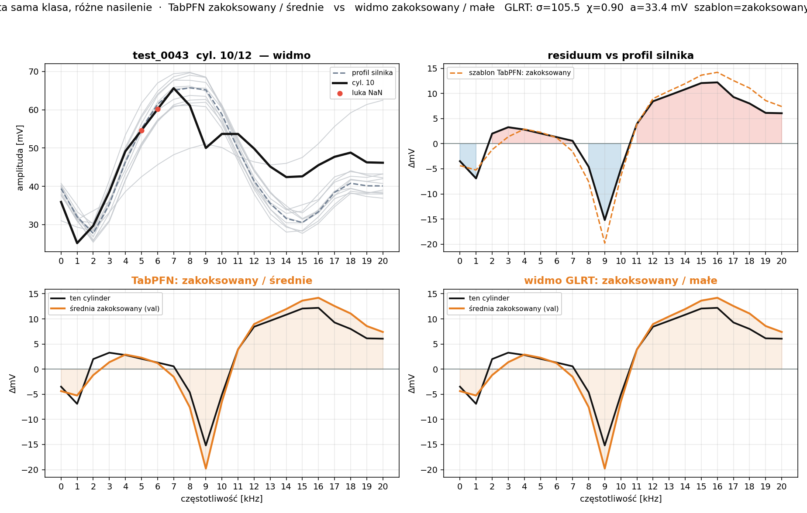
11. test_0045 cylinder 2
rozjazd nasilenia
TabPFN: zakoksowany / średnie
→
widmo: zakoksowany / małe
GLRT: istotność 94.5σ · χ=0.60 · amplituda 32.1 mV · szablon zakoksowany
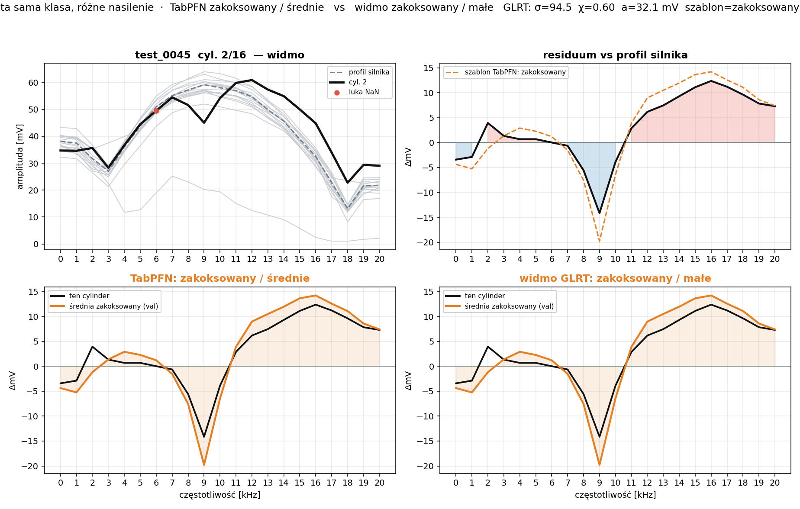